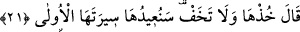

en uygun olan odur. Nitekim “Bir de ne görsünler, asâ apaçık koca bir yılan (su‘bân)
oluvermiş” (eş-Şuarâ, 26/32) âyeti bu durumu açıklığa kavuşturmaktadır. Yılanın cânna
(ince yılana) benzetilmesi, hızlı hareket etmesi ve metâneti bakımındandır.
Ma’rifet ehli bir zât şöyle der: “Asânın canlı bir varlığa dönüşmesi mâsıyetlerin tâat
ve sevâba dönmesine işârettir. Çünkü ‘asâ’ kelimesi, ma‘sıyet kelimesinden
gelmektedir. Masiyet ters çevirilince tâat olur. Nitekim Allah Teâlâ: “Ancak tevbe ve
îmân edip iyi davranışta bulunanlar başkadır. Allah onların kötülüklerini iyiliğe
çevirir.” (el-Furkan, 25/70) buyurmaktadır. Bu çevirme mağfiret makamındandır. “Her
günahtan sonra bir iyilik yap ki onu yok etsin.”[68] hadisindeki günahı yok etmek ise
affın hakîkatinden ibârettir.
Molla Câmî, “Allah onların kötülüklerini iyiliğe çevirir.” (el-Furkan, 25/70) âyeti
hakkında şöyle demiştir: “Yâni onları hüküm bakımından değiştirir. Çünkü bizzat aynlar
değişmez, ancak hükümleri değişir.”
Fakir (Bursevî) der ki: Asânın yere atıldığında yılana dönüşmesi, bakırın iksir ile
gümüşe dönüşmesi ve Cebrâil (a.s.)’ın insan sûretine girmesi bu şekildedir. Bu hususu
bil. Çünkü bu, büyük bir kapıdır. Kim tam bir irfan ile bu kapıdan girerse vehimlerden
emîn olur.
Hâfız der ki:
Aşk yolunun erleri gibi vücud/varlık bakırından elini yu
Ta ki aşk kimyasını bulasın ve altın olasın
Molla Câmî de şöyle der:
Mâdem ki ilim öğrendin, onunla amel etmeye çalış
Ki amelsiz ilim, içmeden öldüren bir zehirdir
Ne hâsıl o kimseden ki kimyayı bilir
Kendi bakırını altın hâline getiremez
21. Allah buyurdu: “Al onu! Korkma! Biz onu şimdi ilk hâline döndüreceğiz.”
“Allah buyurdu: “Al onu, Korkma!” Rivâyete göre asâ, iri bir erkek yılana dönüştü.
Bu yılanın gözleri ateş gibi parlıyor, kaya taş ne bulursa yutuyor, dişlerinden şiddetli bir
çatırtı işitiliyordu. İki çene kemiği arasında kırk veya seksen arşınlık bir genişlik vardı.
Mûsâ (a.s.) onu bu halde görünce korkup kaçtı. Çünkü yılan ve benzeri hayvanlardan
korkup kaçmak insanın tabîatındandır.
Eğer “İbrahim (a.s.) ateşten korkmadığı halde Mûsâ (a.s.) asâdan niçin korktu?”